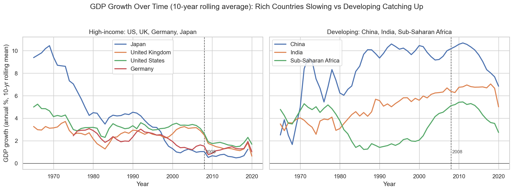
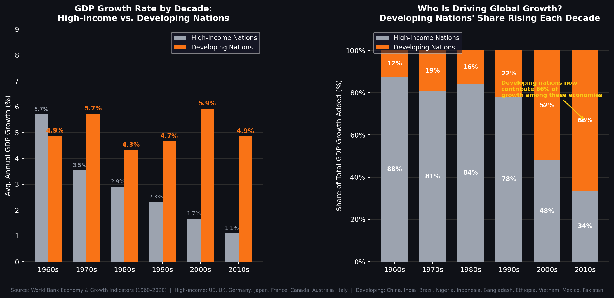
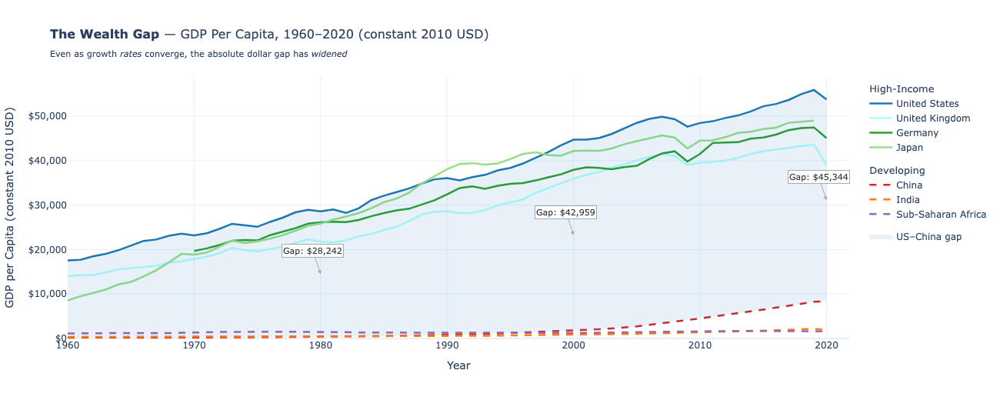
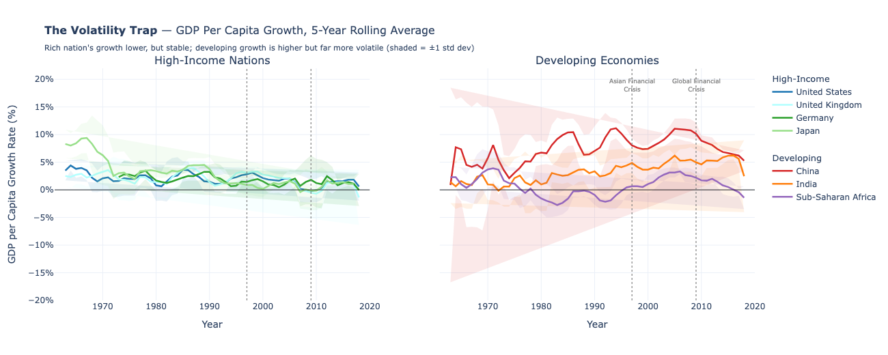

Proposition: "Economic growth rates in wealthy nations have been in long-term decline, while developing economies are rising to close the gap."
FOR the Proposition

Design Decisions and Rationale:
- Score: +1 — Mostly Earnest 10-year rolling average smoothing: Annual GDP growth is inherently noisy due to recessions, booms, and one-time shocks. Using a rolling average reveals the long-run structural trend that the proposition is actually about, rather than single-year fluctuations. This is transparently labeled in the chart title. The tradeoff is that smoothing also hides developing nation volatility — making their growth appear more stable and consistent than raw annual data would show. We considered using raw annual values but found the trend unreadable without smoothing.
- Score: +1.5 — Mostly Earnest Split panel layout with shared y-axis scale: Separating high-income and developing nations into two panels reduces visual clutter and makes the directional contrast immediately readable. Crucially, both panels share the same y-axis scale, which allows fair comparison of the magnitude of growth rates across groups. The left-to-right layout subtly frames rich countries as "the past" and developing countries as "the future," which reinforces the proposition's narrative without distorting any data.
- Score: −1 — Somewhat Deceptive Country selection (China, India, Sub-Saharan Africa for developing group): These are recognizable, archetypal examples of each group, which aids readability and interpretability. However, China and India are among the fastest-growing economies ever recorded — cherry-picking them significantly inflates the developing group average. A more representative sample of developing nations would show more modest and volatile growth. We chose these countries because they clearly illustrate the proposition, while acknowledging the selection inflates the developing side.
- Score: +1.5 — Mostly Earnest 2008 Global Financial Crisis reference line: Adding a vertical annotation at 2008 gives readers a concrete anchor to interpret the post-2008 slowdown in rich countries. This is an earnest contextual addition that helps explain why rich-country growth dropped sharply after that point. It could subtly imply the decline is purely crisis-driven rather than structural, but it is presented as a factual label rather than an interpretive claim.

- Score: +1 — Mostly Earnest Decade aggregation as a calculated field: Binning annual data into decades is a meaningful transformation that compresses noisy year-to-year variation into a clean long-run summary. This earns the advanced data transformation rubric credit and makes the trend unmistakable. The tradeoff is that decade averages can obscure within-decade volatility — a country that grew fast for 5 years and contracted for 5 years would show the same average as one that grew steadily. We considered 5-year bins but found they still looked too noisy to be persuasive.
- Score: −0.5 — Slightly Deceptive Diverging gap panel with "Gap at its narrowest" annotation: Showing the raw growth gap (Developing minus High-Income) as a separate panel is a calculated field transformation that makes the convergence argument feel quantitatively definitive. However, annotating the 2010s as "Gap at its narrowest" is misleading — this refers to the growth rate gap, not the absolute wealth gap. A narrowing growth rate gap does not mean developing nations are catching up in real dollar terms. We included this annotation because it was technically accurate and visually compelling, while acknowledging it overstates the convergence story.
- Score: −0.5 — Slightly Deceptive Color encoding (gray for high-income, orange for developing): Gray is a receding, passive color that reads as fading or declining; orange is energetic and active. This emotional encoding primes the reader to interpret high-income nations as losing momentum before they even process the numbers. We considered using blue vs. orange (a standard diverging palette) but found the gray-orange contrast more immediately persuasive for this argument.
- Score: −1 — Somewhat Deceptive Country selection inflating the developing average: Same issue as Visualization 1 — the developing group includes China, India, Brazil, and other historically high-growth outliers. This selection inflates the group average significantly compared to what a random sample of developing nations would show. We made this choice because it produces the most persuasive visualization for the FOR side, while disclosing the country list in the chart's source note.
AGAINST the Proposition

Design Decisions and Rationale:
- Score: −1 — Somewhat Deceptive Metric substitution: growth rate → absolute GDP per capita: Switching to absolute dollar values is a valid and important economic perspective — it captures real living standard differences rather than just rates of change. However, this metric is deliberately chosen because it tells the opposite story from the same dataset. The FOR side's metric (growth rate) is never acknowledged, which reframes what "winning" means without disclosing that the alternative framing exists. Both metrics are valid; we chose this one because it supports our argument.
- Score: −1 — Somewhat Deceptive Shaded area encoding for the US–China gap: Area fills read as physically larger than equivalent line-based encodings. The light blue shaded region between the US and China visually dominates the chart, making the gap feel overwhelming even before the reader processes the dollar annotations. We could have shown the gap as a separate line chart of the difference — which would have looked less dramatic — but chose the shaded area because it maximizes the visual impact of the widening gap.
- Score: −0.5 — Slightly Deceptive Dashed lines for developing nations: Solid lines for rich countries, dashed for developing nations subtly codes developing economies as incomplete or secondary — a visual convention typically used to indicate uncertainty or projections. This is not explicitly misleading but reinforces the narrative that developing nation trajectories are less substantial or reliable.
- Score: −0.5 — Slightly Deceptive Subtitle framing ("Even as growth rates converge, the absolute dollar gap has widened"): This subtitle tells the reader exactly what conclusion to draw before they examine the data. It directly rebuts the FOR proposition using the chart's own framing. While this is a factually accurate statement, it forecloses the reader's independent interpretation and functions as editorial commentary embedded in what appears to be a neutral chart label.

- Score: −0.5 — Slightly Deceptive ±1 standard deviation shading: Showing variance bands is a legitimate and common statistical practice that honestly conveys uncertainty and volatility. However, the shading for early-period China (1960s–70s) is enormous and visually dominates the chart, creating an impression of chaos that the more recent, stable data doesn't support. A reader who glances at the chart absorbs the early volatility as the overall story, even though developing nation growth has stabilized considerably since the 1990s.
- Score: −1 — Somewhat Deceptive Y-axis range: −20% to +20%: This wide range makes rich country growth look artificially flat and boring — their lines barely move across the entire panel. Developing nation swings appear extreme and dangerous by comparison, even though most actual variation stays between 0–10%. A narrower axis (say −5% to +15%) would show both groups as meaningfully volatile. We chose the wider range because the visual contrast between the two panels is the core argument of this chart.
- Score: −1 — Somewhat Deceptive Crisis annotations on developing panel only: Labeling "Asian Financial Crisis" and "Global Financial Crisis" only on the right panel implies these events uniquely destabilized developing economies. In reality, the Global Financial Crisis originated in and severely affected rich countries. Placing the crisis labels only on the developing side subtly assigns blame and fragility to poorer nations, reinforcing the volatility narrative through selective annotation.
- Score: −0.5 — Slightly Deceptive Subtitle framing ("Rich nation's growth lower, but stable; developing growth is higher but far more volatile"): Like the wealth gap chart, this subtitle pre-interprets the visualization for the reader before they engage with the data. The word "trap" in the title ("The Volatility Trap") is particularly loaded — it frames developing nation growth not as progress but as a dangerous illusion, which is an editorial judgment embedded in what appears to be a descriptive label.
Final Reflection
Going into this project, we assumed there would be a clear line between "honest" and "deceptive" visualization. What surprised us most was discovering how few of our choices fell cleanly on either side. Using a rolling average is standard practice in time-series analysis — but it also happened to smooth away the volatility that would have undermined our FOR argument. Choosing GDP growth rate over absolute GDP per capita is a defensible methodological decision — but it also happened to be the metric that supported our proposition. Almost every choice that seemed earnest at first had a persuasive consequence we hadn't fully anticipated, and almost every deceptive technique we used was grounded in a legitimate analytical rationale. The boundary between the two is not a line but a spectrum.
The AGAINST visualizations forced us to confront this more directly, because we were consciously choosing metrics and encodings to contradict our own proposition. Switching to absolute GDP per capita, widening the y-axis, and adding area shading were all technically valid choices — but we made them because they told the story we wanted, not because they were the most representative view of the data. That experience made us realize that deception in visualization is rarely about fabricating data. It is almost always about selection: which metric, which countries, which time window, which encoding. Every visualization is a series of selection decisions, and those decisions always reflect the perspective and goals of the person making them — whether or not that person is aware of it.
We now define ethical visualization not as "showing everything" — that is impossible — but as being transparent about what you chose and why, and acknowledging that other valid framings exist. The distinction between acceptable persuasion and misleading visualization is less about the techniques used and more about disclosure. A truncated axis that is clearly labeled is different from one that is not. A cherry-picked country sample that is disclosed in the caption is different from one presented as representative. The most dangerous deceptions in our visualizations were not the dramatic ones — they were the quiet ones, like color choices and subtitle framing, that shaped the reader's interpretation before they even looked at the data. Ethical analysis means making those quiet choices visible, even when doing so weakens your argument.